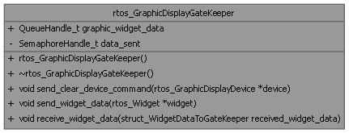

Loading...
Searching...
No Matches
rtos_GraphicDisplayGateKeeper Class Reference
The RTOS graphic display gatekeeper is the class that manages the access to the graphic display device in an RTOS environment. More...
#include <display_device.h>
Collaboration diagram for rtos_GraphicDisplayGateKeeper:

Public Member Functions | |
| rtos_GraphicDisplayGateKeeper () | |
| constructor for rtos_GraphicDisplayGateKeeper | |
| void | send_clear_device_command (rtos_GraphicDisplayDevice *device) |
| Send the clear device command to the display task. | |
| void | send_widget_data (rtos_Widget *widget) |
| Send the widget data to the display task. | |
| void | receive_widget_data (struct_WidgetDataToGateKeeper received_widget_data) |
| Receive the widget data from the display task. | |
Public Attributes | |
| QueueHandle_t | graphic_widget_data |
| Queue to send widget data to the display task. | |
Private Attributes | |
| SemaphoreHandle_t | data_sent |
| Semaphore to signal that data has been sent to the display. | |
Detailed Description
The RTOS graphic display gatekeeper is the class that manages the access to the graphic display device in an RTOS environment.
Member Function Documentation
◆ receive_widget_data()
| void rtos_GraphicDisplayGateKeeper::receive_widget_data | ( | struct_WidgetDataToGateKeeper | received_widget_data | ) |
Receive the widget data from the display task.
- Parameters
-
received_widget_data the received widget data
Here is the call graph for this function:

◆ send_clear_device_command()
| void rtos_GraphicDisplayGateKeeper::send_clear_device_command | ( | rtos_GraphicDisplayDevice * | device | ) |
Send the clear device command to the display task.
- Parameters
-
device the display device
Here is the call graph for this function:

◆ send_widget_data()
| void rtos_GraphicDisplayGateKeeper::send_widget_data | ( | rtos_Widget * | widget | ) |
Send the widget data to the display task.
- Parameters
-
widget the widget to show
Here is the call graph for this function:

The documentation for this class was generated from the following files:
- display_device.h
- display_device.cpp